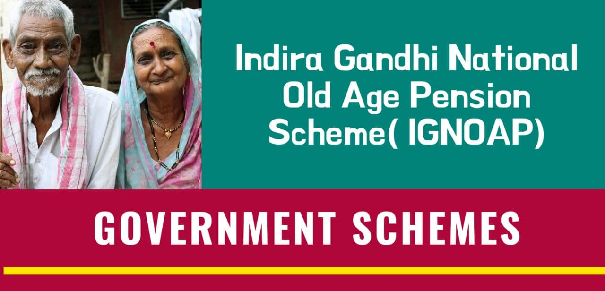

The scheme "Indira Gandhi National Old Age Pension Scheme (IGNOAPS)" is one of the five sub-schemes of the National Social Assistance Programme (NSAP). Under IGNOAPS, citizens living Below Poverty Line and 60 years or above in age are eligible to apply. A monthly pension of ₹ 200 up to 79 years and ₹ 500 thereafter.
Objectives of NSAP -
1. Provides social assistance benefits to poor households in the case of death, maternity, or old age of the breadwinner.
2. Ensure minimum national standards, in addition to the benefits, the States are currently providing or might provide in the future.
3. Ensure uniform social protection to the beneficiaries across the country without interruption.
Expansion to cover all eligible BPL persons -
In 2007, the scheme was expanded to cover all eligible persons Below Poverty Line (BPL).Documents required:
● Duly filled and self-attested Application Form
● Domicile Certificate
● Residential Proof (Voter card/ Electricity Bill/Aadhar Card)
● Age Proof
● Aadhar Number
● Bank Passbook
● Ration Card
● Affidavit duly attested by Judicial Magistrate/Executive Magistrate that she/he is not in receipt of any pension/ financial assistance from any other source
Benefits :
A monthly pension of ₹ 200 up to 79 years and ₹ 500 thereafter.
Eligibility:
1. The applicant should be a citizen of India.
2. The applicant should be living Below Poverty Line.
3. The applicant should be at least 60 years of age.
Application Process:
Online
• One can download UMANG App or visit website.
• The citizen can login using mobile number and OTP.
• Once logged In, citizen can search for NSAP.
• Click on “Apply Online”
• Fill the basic details, choose the mode of payment of pension, upload photo and click on “Submit”.

Eligibility typically includes individuals aged 60 years or older who belong to below-poverty-line (BPL) households. Specific criteria may vary by state, but the focus is on economically disadvantaged seniors.
As of now, eligible beneficiaries receive a monthly pension of ₹200 for those aged 60 to 79 years and ₹500 for those aged 80 years and above. The amount may vary based on state policies.
Eligible individuals can apply through the local Social Welfare Department or designated government offices. Required documents usually include age proof, income certificate, and BPL status documentation.
Yes, the pension amount is typically credited directly to the beneficiary’s bank account or through post office accounts to ensure secure and timely disbursement.
Yes, applicants usually need to submit documents such as proof of age, income certificate, BPL card, and identity proof (like Aadhar card) while applying for the pension scheme.
Yes, individuals receiving pensions from other schemes can still apply for IGNOAPS; however, priority is typically given to those without any other financial support.
Indira Gandhi National Old Age Pension Scheme
NSAP stands for National Social Assistance Programme.NSAP aims at ensuring minimum national standards, in addition to the benefits that the States are currently providing or might provide in future.
READ
Indira Gandhi National Old Age Pension Scheme
In providing social assistance benefits to poor households in the case of old age, death of the breadwinner, and maternity, the NSAP aims at ensuring minimum national standards, in addition to the benefits that the States are currently providing or might provide in future.
READ